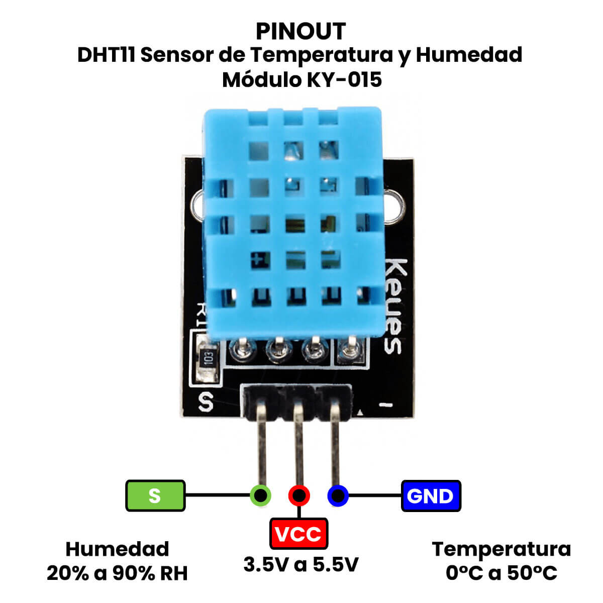
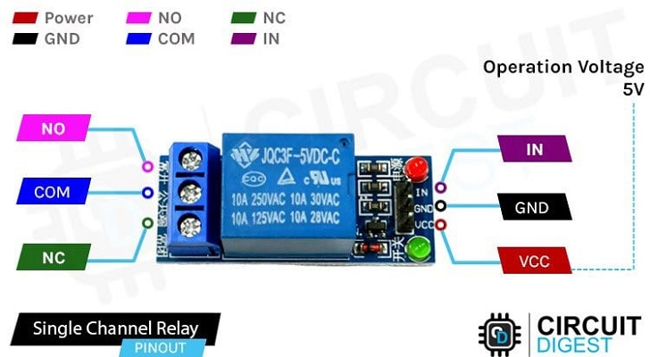
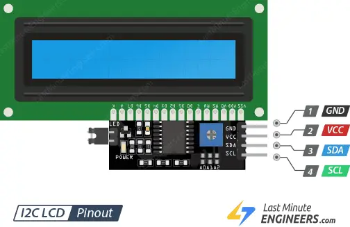

¡Saludos, futuros ingenieros! Ya son expertos en medir el mundo y controlar movimiento. Hoy vamos a dar un salto gigante: aprenderemos a leer dos variables ambientales con un solo sensor, a controlar aparatos del mundo real (como los que se conectan a la pared) y a mostrar toda esa información de manera profesional en una pantalla de cristal líquido (LCD).
🧠 Protagonista 1: Sensor DHT11 (El Combo Digital 2x1)
El DHT11 es un sensor increíblemente popular y práctico. Es como tener un termómetro y un medidor de humedad en un solo paquete digital.
- ¿Cómo funciona?: Internamente, tiene un sensor de humedad y un termistor. Un pequeño chip convierte esas lecturas en una señal digital que nuestro Arduino puede entender. ¡Con un solo pin de datos obtenemos dos mediciones!
- Pines: Usualmente viene en un pequeño módulo con 3 pines:
VCCo+: A 5V.GNDo-: A GND.DATAoOUT: Al pin digital de Arduino que elijamos.
- Nota: Si usas el sensor que viene solo, es decir sin módulo (4 pines), debes colocar una resistencia
Pull-Upque puede ser un valor entre 4.7K y 10K.

⚙️ Protagonista 2: El Módulo de Relé (El Interruptor de Alto Voltaje)
¿Recuerdan que el transistor nos ayudó a controlar un motor de 12V? Bueno, ¿qué pasa si queremos controlar una lámpara, un ventilador o una cafetera que se conecta directamente al enchufe de la pared (120V AC)? ¡NUNCA, BAJO NINGUNA CIRCUNSTANCIA, conectes alto voltaje directamente a tu protoboard o Arduino! Podrías destruirlo y, lo que es peor, es extremadamente peligroso.
Para esta tarea, necesitamos un intermediario seguro: el Relé (o Relevador).
- ¿Qué es?: Es un interruptor electromagnético. Usamos una señal pequeña y segura de 5V de Arduino para activar un electroimán dentro del relé. Este imán mueve un interruptor físico interno que está completamente aislado de nuestro Arduino, permitiendo controlar de forma segura el circuito de alto voltaje.
- Pines del Módulo:
- Lado de Control:
VCC,GNDyIN(la señal que viene de Arduino). - Lado de Potencia (los tornillos):
COM: Común. Aquí conectas uno de los cables del aparato que quieres controlar.NO: Normally Open (Normalmente Abierto). El circuito está apagado por defecto.NC: Normally Closed (Normalmente Cerrado). El circuito está encendido por defecto.
- Lado de Control:
- Generalmente usaremos
COMyNO.

🖥️ Protagonista 3: La Pantalla LCD 16x2 con I2C
El Monitor Serial es genial para pruebas, pero si queremos que nuestro proyecto sea independiente de la computadora, necesitamos una forma de ver la información.
La Pantalla LCD (Liquid Crystal Display) es la solución clásica. El modelo 16x2 significa que puede mostrar 2 filas de 16 caracteres cada una.
Conectar una LCD directamente requiere muchos pines. Por eso, usamos un pequeño módulo I2C que viene soldado detrás. ¡Este módulo reduce los 16 cables necesarios a solo 4!
GND: A GND.VCC: A 5V.SDA: Pin de Datos ➜ Al pin A4 de Arduino UNO.SCL: Pin de Reloj ➜ Al pin A5 de Arduino UNO.

🔌 El Circuito: Estación de Monitoreo Ambiental
Componentes Necesarios:
- Arduino, Protoboard, Cables
- Sensor DHT11
- Módulo de Relé de 1 canal
- Pantalla LCD 16x2 con I2C
- Un foco con socket y clavija (para el lado de potencia del relé). ¡MÁXIMA PRECAUCIÓN AQUÍ!
📝 Instrucciones de Conexión:
- Conecta la Pantalla LCD:
GND➜ GND,VCC➜ 5V,SDA➜ A4,SCL➜ A5.
- Conecta el Sensor DHT11:
+➜ 5V,-➜ GND,OUT➜ Pin Digital 2.
- Conecta el Módulo de Relé (Lado de Control):
+➜ 5V,-➜ GND,IN➜ Pin Digital 7.
- Conecta el Foco al Relé (Lado de Potencia):
- ADVERTENCIA: Pide ayuda y supervisión al Profe Campos para este paso.
- Toma el cable de la lámpara. Córtalo en uno de los dos hilos (no en ambos).
- Conecta un extremo del hilo cortado al tornillo
COMdel relé. - Conecta el otro extremo del hilo cortado al tornillo
NOdel relé.
⚡ Diagrama de armado

💡 Conceptos Clave de la Misión
- Protocolo I2C: Un bus de comunicación industrial que permite interconectar múltiples dispositivos (como pantallas y sensores) usando únicamente dos cables de señal (
SDAySCL). - Función
isnan(): Significa "Is Not a Number" (No es un Número). Es una función matemática indispensable para validar que las lecturas obtenidas del DHT11 sean correctas y no se hayan corrompido durante la transmisión de datos.
🧠 El Código: El Centro de Comando
Este código necesita varias librerías. Asegúrate de instalarlas desde el Gestor de Librerías de Arduino IDE: DHT sensor library (de Adafruit) y LiquidCrystal_I2C.
/*
* Misión 09: El Panorama Completo
* Descripción: Muestra Temp/Humedad del DHT11 en una LCD y activa un relé.
* Por: Profe Campos
* CECyTEM 05 Guacamayas
*/
// --- INCLUIR LIBRERÍAS ---
#include <Wire.h>
#include <LiquidCrystal_I2C.h> // Para la pantalla LCD
#include "DHT.h" // Para el sensor DHT
// --- CONFIGURACIÓN DE COMPONENTES ---
#define DHTPIN 2 // Pin donde está el DHT11
#define DHTTYPE DHT11 // Definimos que es un DHT11
const int pinRele = 7; // Pin para controlar el relé
// Inicializamos los objetos
DHT dht(DHTPIN, DHTTYPE);
LiquidCrystal_I2C lcd(0x27, 16, 2); // Dirección I2C, 16 columnas, 2 filas
void setup() {
Serial.begin(9600);
pinMode(pinRele, OUTPUT);
digitalWrite(pinRele, LOW); // Nos aseguramos que el relé empiece apagado
dht.begin(); // Iniciamos el sensor DHT
lcd.init(); // Iniciamos la pantalla LCD
lcd.backlight(); // Encendemos la luz de fondo
lcd.setCursor(0, 0); // Ponemos el cursor en la columna 0, fila 0
lcd.print("Estacion CTEC");
lcd.setCursor(0, 1); // Columna 0, fila 1
lcd.print("Iniciando...");
delay(2000);
lcd.clear(); // Limpiamos la pantalla
}
void loop() {
delay(2000); // Esperamos 2 segundos entre lecturas
// Leer la humedad y la temperatura toma unos 250ms
float h = dht.readHumidity();
float t = dht.readTemperature();
// Verificamos si la lectura falló (muy común con los DHT)
if (isnan(h) || isnan(t)) {
Serial.println("Error al leer del sensor DHT!");
lcd.setCursor(0, 0);
lcd.print("Error de Sensor");
return; // Salimos del loop y lo intentamos de nuevo
}
// --- MOSTRAMOS EN LCD ---
lcd.setCursor(0, 0);
lcd.print("Temp: ");
lcd.print(t);
lcd.print(" C");
lcd.setCursor(0, 1);
lcd.print("Hum: ");
lcd.print(h);
lcd.print(" %");
// --- LÓGICA DEL RELÉ ---
if (t > 30.0) { // Si la temperatura supera los 30 grados
digitalWrite(pinRele, HIGH); // Activamos el relé
} else {
digitalWrite(pinRele, LOW); // Lo desactivamos
}
}
🚀 ¡Inténtalo Tú Mismo! (Retos)
- Control de Humedad: Modifica la lógica para que el relé se active si la humedad supera el 70%, simulando un deshumidificador.
- Doble Condición: Cambia el código para que el relé solo se active si la temperatura es alta Y la humedad también es alta. (Pista: necesitarás el operador
&&). - Mensajes en LCD: Haz que en la pantalla LCD aparezca un mensaje como "Ventilador ON" o "Ventilador OFF" según el estado del relé.
¡Felicidades! Han dado un paso enorme hacia la instrumentación real. Ahora pueden no solo leer el ambiente con precisión, sino también controlar dispositivos de mayor potencia de forma segura. ¡Están listos para automatizar casi cualquier cosa!
¡A seguir construyendo! - Profe Campos